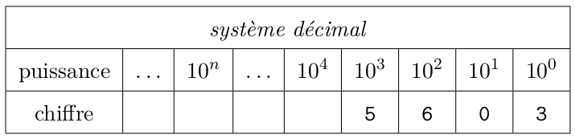

Le binaire et le codage de l'information numérique⚓︎

Le point commun de toutes les notions abordées en SNT est qu'elles font appel à de l'information numérisée.
«Numériser» signifie «transformer en nombres», et les nombres dont il s'agit sont le 0 et le 1.
- un SMS → des 0 et des 1
- une photo → des 0 et des 1
- une vidéo → des 0 et des 1
- un vocal → des 0 et des 1
- une page web → des 0 et des 1
Un exemple de stockage non numérique ? Les disques vinyls, les photos papier,... mais trouver d'autres exemples devient de plus en plus difficile !
Comment une succession de 0 et de 1 peut donner des choses aussi différentes ? Dans ce cours nous allons apprendre comment ces 0 et ces 1 permettent d'écrire n'importe quel nombre (ce qui est un bon début).
1. Le système décimal⚓︎
Notre mode de numération est le système décimal, ou système de base 10.
Chaque nombre s’écrit avec les 10 chiffres 0 1 2 3 4 5 6 7 8 9.
Chaque chiffre correspond à un rang, qui est celui d’une puissance de 10.
Prenons par exemple le nombre en écriture décimale \(5603_d\) (le petit d en indice est là pour rappeler que le nombre est écrit en écriture décimale).
Le chiffre 5 est dans le rang des milliers, donc de \(10^3\) .
On peut donc écrire :
\(\texttt{5603}_d=\texttt{5} \times 10^3 + \texttt{6} \times 10^2 + \texttt{0} \times 10^1 + \texttt{3} \times 10^0\)

Ce système de base 10 provient (très probablement) du fait que les humains ont dix doigts.
De cette manière, on pourrait imaginer que dans leur univers, les Simpsons compteraient en base 8 car ils n'ont que 4 doigts à chaque main.
2. Le système binaire⚓︎
Les appareils électroniques (ordinateurs, calculatrices, téléphones, etc.) travaillent avec un système de représentation des nombres différent, le système binaire. Dans ce système, appelé aussi système de base 2, chaque nombre s’écrit avec les deux chiffres 0 et 1 (correspondant en fait au passage ou non d’un courant électrique dans un transistor). Chaque chiffre correspond à un rang, qui est celui d’une puissance de 2.
2.1 Du binaire au décimal⚓︎
Prenons par exemple le nombre en écriture binaire \(\texttt{1101}_b\).
Pour connaître la valeur de \(\texttt{1101}_b\) en écriture décimale on peut donc s'aider du tableau :
Donc le nombre 1101 écrit en binaire correspond au nombre 13 écrit en décimal.
Exercice 1
Q1. Donner l’écriture décimale du nombre \(10111_b\) .
Q2. Quelle est la valeur (en écriture décimale) du plus grand nombre binaire écrit sur un octet ? (un octet = 8 bits)
Q3. Expliquer cette blague d’informaticiens : « Dans la vie, il y a 10 sortes de personnes : celles qui connaissent le binaire, et celles qui ne le connaissent pas. »
2.2 Du décimal au binaire⚓︎
Principe : dans chaque nombre décimal, il existe une plus grande puissance de 2 qui est inférieure au nombre.
Par exemple, dans 243, il y a 128. Donc
Donc \(243_{10}=11110011_2\)
Méthode des divisions successives
Exercice 2
Donner l'écriture binaire du nombre \(186_d\).
3. Codage et transmission de l'information⚓︎
Voici la table ASCII (American Standard Code for Information Interchange)

Le mot «OK» sera donc codé en binaire par 0100111101001011 .
Si on veut transmettre le mot «OK», il faut donc transmettre ces 16 bits d'information. La vitesse à laquelle on va les transmettre s'appelle le débit. Par exemple, si on transmet 1 bit par seconde, le débit sera de 1 b/s.
Le débit moyen lors d'une connexion en 5G est de 450 Mb/s, soit 450 000 000 b/s...
Exercice 3
En vous répartissant le travail, décodez la phrase (codée en décimal) : 74, 39, 65, 73, 77, 69, 32, 76, 69, 32, 66, 73, 78, 65, 73, 82, 69